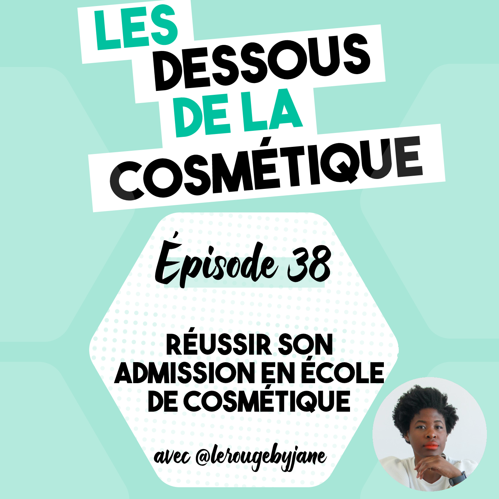
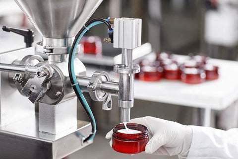
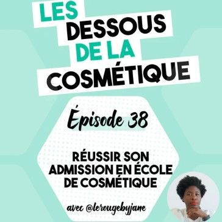

PODCAST : EPISODE 38, REUSSIR SON ADMISSION EN ECOLE DE COSMETIQUE AVEC @JEANNEINBEAUTYLAND

Écoutez l'épisode audio pour savoir comment réussir son admission en école de cosmétique !
Il existe de nombreuses formations dans l’industrie cosmétique.
Pour les cursus scientifiques :
- L’ISIPCA qui est une école à Versailles, dont les portes ouverts sont le samedi 1er avril 2023, a différentes formations comme :
- licence professionnelle chimie appliquées à la cosmétique, avec l’université de Versailles. Admissions sur Parcoursup passées, elles étaient de Novembre à Février 2023
- le Master en alternance Matière Premières Naturelles Cosmétique qui est 1/3 bio, 1/3 chimie et un 1/3 cosmétologie, avec l’université de Versailles. Admission en cours depuis Décembre jusqu’au 18 avril 2023 pour la 1ere année.
- le Bac +5 Manager des process de création et développement des produits Parfum, Cosmétique et Aromes alimentaires, accessible à partir du Bac +2. C’est la formation que l’on a appelé MSc qui sont les acronymes de Master of Science. Les inscriptions étaient de décembre à février ou mars selon l’année à laquelle on candidate
- ESP = Écope Supérieur du Parfum à Paris
- Master Formulation, évaluation sensorielle et analyse des industries de la parfumeries, de la cosmétique et de l’aromatique alimentaire (FESAPCA) avec une admission en cours du 22 mars au 18 avril 2023 sur le site Mon Master
- IUT d’Orléans
- BUT Chimie parcours Matériaux et produits formulés avec une admission post bac sur parcoursup sur lequel on doit confirmer ses voeux avant le 6 avril
- Master Chimie Moléculaire parcours Bioactifs et Cosmétiques - en initial ou en alternance. Admission du 22 mars 2023 au 18 avril 2023
- Le Havre
- Master Chimie ARPAC - Aromes, Parfums et Cosmétiques. Admission du 22 mars 2023 au 18 avril 2023
- UCO, Université Catholique de l’Ouest, en Bretagne à Guingamp
- Master Biotechnologies parcours Ingénierie des produits et des process cosmétiques - en alternance ou en initiale - admissions sur Mon Master
- Université de Nantes
- Licence pro Bio-industries et biotechnologies, parcours Biotechnologies en Santé et Alimentaire - admission sur Parcoursup du 4 avril au 5 mai 2023
- Master Sciences du médicament et des produits de santé, parcours Topiques et Cosmétique (TopCOS) - admissions sur Mon Master
- Diplome Universitaire Cosmétiques au service de la santé cutanée - pour les docteurs, infirmier ou préparateur ou préparatrice en pharmacie - ouverture des inscription le 5 juin 2023
- Université de Montpellier
- Faculté de Pharmacie de Marseille
- Master Ingénierie de la Santé, parcours Médicaments et Produits de Santé, Dermo-cosmétologie - en initiale ou en alternance - admissions sur Mon Master
- Université Côte d’Azur, à Grasse
- école d’ingé, ITECH, Lyon
- Diplome d’ingé, majeur Chimie des Formulations - admission en prépa se fait sur ParcourSup
- Mastère Spécialisé Responsable projet industrialisation cosmétique - visioconférence le 4 avril ou le 27 avril
- École d’ingé ESCOM, Compiègne
- Diplôme d’ingé, majeur Produits Formulé et Applications
Pour les cursus Marketing:
Les réseaux de professionnels de la cosmétique : YPB, CEW

Vous avez loupé le dernier épisode ? Jetez un œil sur L'épisode 37, Que faire pour ma peau sensible ?
Cet article vous a plu ? 📌
Épinglez-le sur Pinterest pour le retrouver plus tard !
